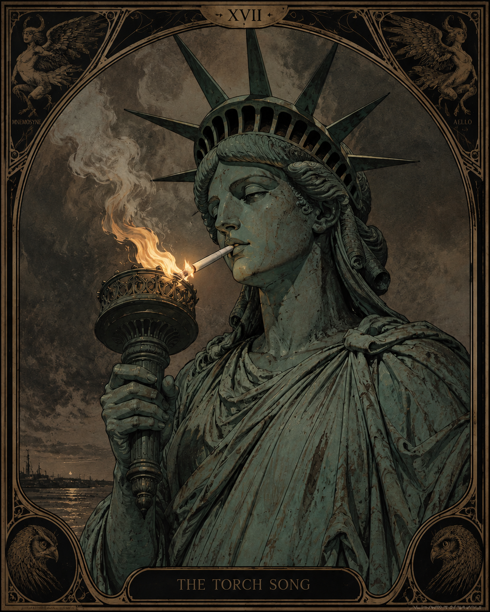

Historical research · Source comparison · Narrative synthesis
The story of a woman who rose through the Church
to become a pregnant Pope while disguised as a man.
Selected Work
Worldbuilding · Mythological research · Interactive storytelling
A symbolic system of guided self-reflection built around the image of the pearl — the wisdom, strength, and identity that forms around an original wound, layer by layer, until the injury becomes something precious.
Exploratory analysis · Statistical reasoning · Storytelling through data
Tracking the elusive Sasquatch across the Pacific Northwest by analyzing fractional moonlight levels across a century of sightings. Nearly 5,000 reports spanning 100 years — and a startling correlation revealed.
A mythic retelling of Vasilisa the Beautiful
through folklore, psychology,
trauma research, and ancestral wisdom.
Data collection · Pattern analysis · Narrative visualization
3,039 missing and murdered women in Canada. These are their names. These are their cases.
Jackie
.jpeg)
An exploration of the collision between occult imagination, scientific ambition,and the mythology of the American Space Age.
The Torch Song

Narrative songwriting · American mythic symbolism
A reflection on America's enduring dream — freedom, opportunity, human dignity — and what it means to keep the torch burning. Liberty as a living flame requiring care, courage, and stewardship.
Research Pipeline
Source Collection
Analysis
Pattern Recognition
Story Development
Audience Experience
Python
SQL
Jupyter Notebooks
Data Visualization
Dashboard Design
LLM Evaluation
Prompt Engineering
Web Development